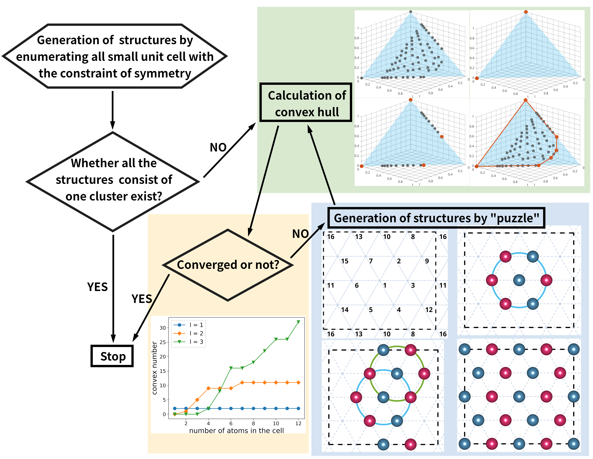
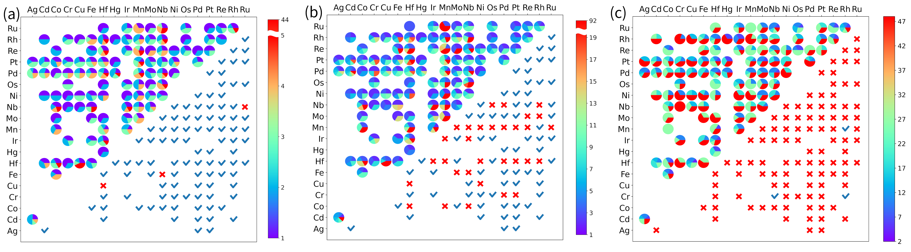

A method for rapid screening of ground-state candidate structures is proposed to accelerate high-throughput density function theory (DFT) calculations.
Background
With the improvement of computing power and the development of DFT software, there is a trend to find new materials through high-throughput calculation. A key question for high-throughput conputing is what kind of structural prototype to choose for the calculation. The usual practice is to select the existing structural prototypes in the experimental or calculation database (ICSD/Materials Project/Aflow) accroding to the material lattice type or coordination number and other information. These structural prototypes are then used as target element replacements for the calculation. In our work on symmetry-based structure classification strategies, we aim to generate new possible ground-state candidate structures that can be uesd as structural prototypes for high-throughput calculations of materials.
Main works
Our methods mainly based on the Atomic Classification Model (ACM) and the vertex analysis of the correlation function. And the core work is to design a convex hull algorithm, which differs from the general triangulation methods in that the vertexes can be solved step by step and the preceding vertexes are not covered by subsequent vertexes. This is a benefit derived from the symmetric classification of data points.
Here is the flowchart of the whole algorithm: 
A further inference is when we expand the cutoff radii to infinity in the ACM, the key indicator $l$ in the model can naturally become the number of Wyckoffs positions ($N_{W}$). Then we found that even without the convex hull calculation, we can greatly reduce the calculation cost and find effective prototype just classifying the structures by $N_{W}$.
Figure (a) is the result of classifying the ground state structures of 100 binary alloys in the AFLOW database according to $N_{W}$. It can be found that under the premise of the same amount of calculation, its effect is much better than according to the other two indicators (b) (c), namely the number of structural atoms in the cell and the number of symmetrical operands of the structure.
